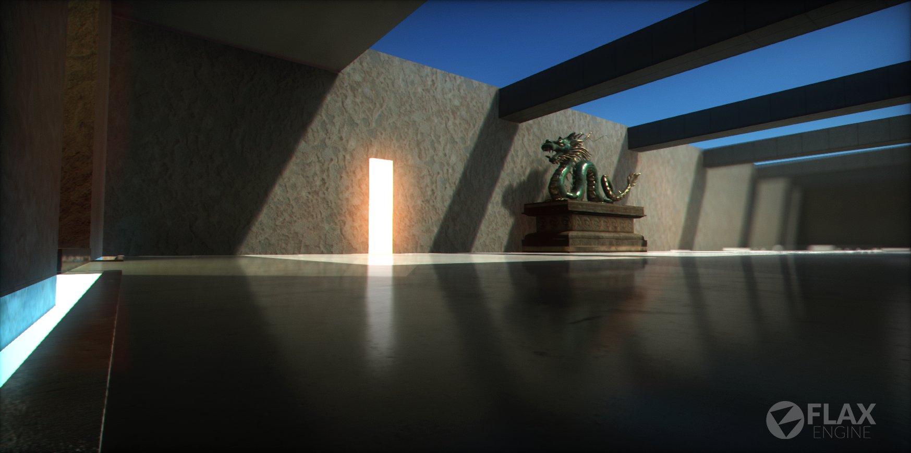
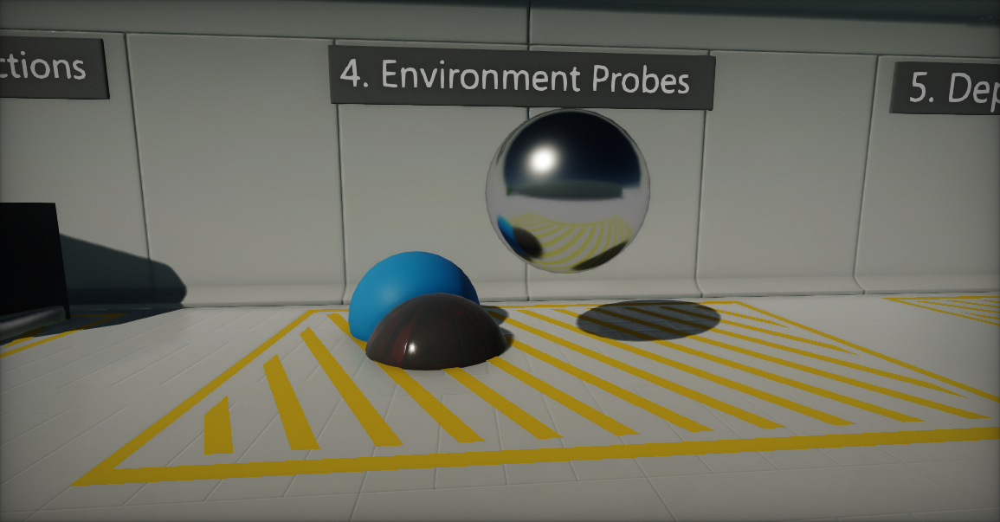
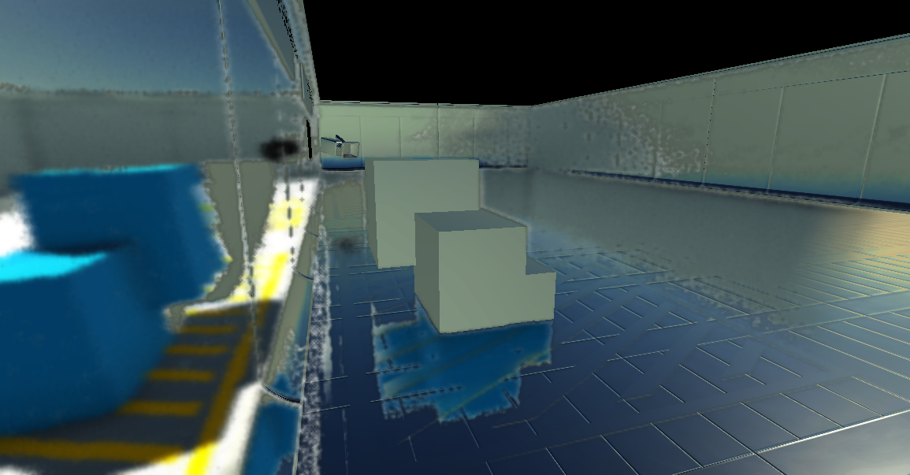
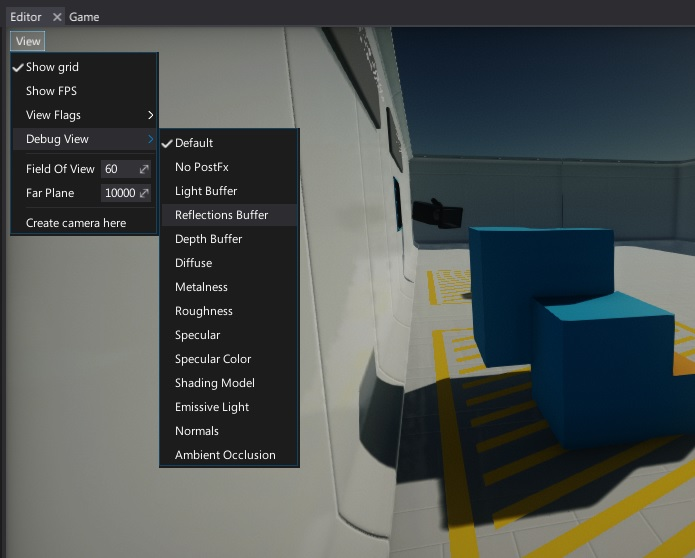

Reflections

One of the key aspects in bringing realism into you scenes is creating a proper reflection environment. Many materials like metals, marbles or shiny plastics relay on having reflections in all directions. Flax Engine offsers wide variety of features to setup scenes for reflections.
Environment Probes

The best way to add reflections into your scene is to use Environment Probe actor. It's dedicated object that captures the scene around it's origin and creates a 360 cubemap that is later used to calculate per-pixel reflections on materials.
Reflection probes should be generally placed in strategic points, where the appearance of a reflective object would change noticeably (eg, tunnels, areas near buildings and places where the ground colour changes). When a reflective object passes near to a probe, the reflection sampled by the probe can be used for the object’s reflection map. Furthermore, when several probes are nearby or even overlap, Flax can interpolate between them to allow for gradual changes in reflections. Thus, the use of reflection probes can create quite convincing reflections with an acceptable processing overhead.
To learn more about placing and using environment probes see dedicated page.
Screen Space Reflections

Using environment probes may be very limited and in many siturations objects may suffer from invalid reflection color. For those situation using Screen Space Reflections (SSR) effect helps with creating realistic local reflections. This effect is rendered in screen space, which means reflected can be only objects that are already on the screen (it doesn't work for offscreen or obscured objects).
This means SSR works well in enclosed areas such as corridors and rooms, but less well in open spaces, where you'd expect more of the world to be reflected. They also work best on bumpy surfaces, which hide imperfections in reflections, and less well on very glossy, mirror-like surfaces. Missing reflections are noticeable in mirrors, for example. As a fallback value is used reflection color from placed Environment Probes.
To learn more about using Screen Space Reflections see dedicated page.
Visualizing

Flax Editor provides in-build option to debug full scene reflections right inside the editor viewport. To do this, click the View widget and select option Debug View -> Reflections Buffer. This will change view mode. To revert choose Default option.

Note
To learn more about Debug View and other debugging tools see related page here.